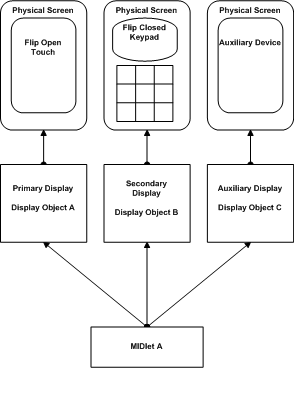
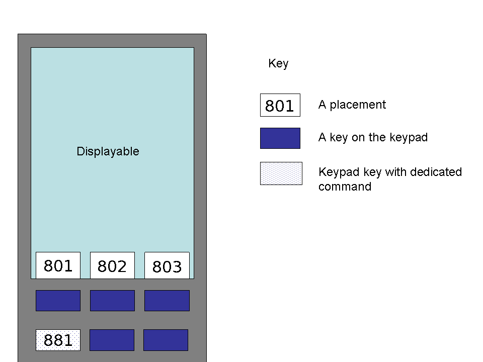

javax.microedition.lcdui.Display
javax.microedition.lcdui.Display
|
MIDP3.0 | |||||||||
| PREV CLASS NEXT CLASS | FRAMES NO FRAMES | |||||||||
| SUMMARY: NESTED | FIELD | CONSTR | METHOD | DETAIL: FIELD | CONSTR | METHOD | |||||||||
java.lang.Object
public class Display
The Display class provides a MIDlet with access to the
device's user interface hardware resources. It includes static methods for
obtaining Display objects as well as instance methods to retrieve their
properties and display user interface objects on them.
A MIDP device has one or more display resources for interacting with the user. Each resource includes a graphical display device and may also include keys, touchscreen input, etc.
A MIDlet gains access to a display resource using a Display object. Each Display object represents a specific MIDlet's use of a specific resource, rather than the resource itself. Hence, for a given display resource, each MIDlet has its own dedicated Display object for accessing it.
Multiple MIDlets may want to use the same display resource simultaneously. Some aspects of a display resource are exclusive in nature; that is, they can be made available to only one MIDlet at a time. For example, regular key events are typically provided to a single application. However, other resources may be non-exclusive, thereby allowing the resource to be simultaneously allocated to several MIDlets. For example, space on a large display can be split up into several windows, each of which is allocated to a specific application.
The nature of specific resources and the policies for sharing them between applications are largely platform dependent. However, the Display class defines three states that should be used in conjunction with the platform's policies for sharing display resources.
When a Display has foreground status, it
is given the highest priority for accessing the corresponding display
resource. Exclusive aspects of the resource are only available to the
foreground Display, and it also has the highest priority to use non-exclusive
aspects of the resource. For a given display resource, there can be no more
than one foreground Display. If the resource is also used by the native UI of
the device, there may be times when no Display is in the foreground.
When a Display has background status, all
of its display resources are relinquished and unavailable to the MIDlet. For
a given set of display resources, there can be any number of Displays that
are in the background state. A Display is initially in this state and it
cannot be changed unless a Displayable is
shown on it.
When a Display is visible, it has access to
at least one pixel on the display resource. However, it will not have access
to exclusive aspects of the resource.
setCurrent method. However, these requests to
change the Display state are not guaranteed and are subject to the device's
application window management behavior.
The underlying hardware resource represented by a Display may not always be available. For example, the main display of a mobile phone is not usable while the flip is closed. Furthermore, some resources are dynamic (e.g. a Bluetooth enabled projector) and their availability may be temporary in nature.
Therefore, a Display object has a hardware state to indicate the state of its underlying resource. This state refers to the display resource itself, rather than a specific MIDlet's ability to use it. Thus, all Displays that refer to the same hardware have the same hardware state, regardless of which MIDlet they belong to.
The hardware life-cycle is defined with three states:
DISPLAY_HARDWARE_ENABLED - The
Display's hardware is active and potentially available for use by the MIDlet.
Attempts to use the Display should be successful, but due to the asynchronous
nature of the API and possible system use, immediate availability of the
resource is not guaranteed. DISPLAY_HARDWARE_DISABLED - The
Display's hardware is inactive and currently cannot be used to interact with
the user. For example, the main display of a mobile phone is disabled while
the flip is closed. When a display resource is disabled, all of the
corresponding Displays are temporarily placed in the background state.
While the hardware is disabled, calls to setCurrent(),
removeCurrent(), and
setCurrentItem() should still be honored, but the
Display MUST remain in the background. When the hardware is
enabled again, the Display state should be restored to the
most recent foreground/background request made; if no requests were made
while the hardware was disabled, then the restored state should simply be
the Display's state immediately before the hardware became disabled. DISPLAY_HARDWARE_ABSENT - This state
only applies to an Auxiliary display hardware resource and it indicates that
the resource is no longer accessible by the device. Attempts to use an absent
Display will result in an exception being thrown. Displays that represent
absent hardware are automatically placed in the background state. MIDlets
should not retain references to absent Displays since they cannot be re-used.
If the same Auxiliary display hardware becomes accessible once more, a new
Display object is created to access it.
For every MIDlet, there is always one primary Display object. The
primary Display corresponds to the device's main display that is normally
used to access its features. The application can get a reference to the
primary Display instance by calling the getDisplay()
method. The application may call the getDisplay() method at
any time during course of its execution. The Display object
returned by all calls to getDisplay() will remain the same
during this time.
In addition to the primary Display, one or more secondary Displays may also be available to a MIDlet. These Displays correspond to secondary display devices such as the second screen on the outside of a mobile phone's flip; they may also include auxiliary display devices that are available to the device via a suitable connection.
The getDisplays(int) method returns a list of
Display objects corresponding to a given MIDlet. The primary Display object
is always returned as the first element in the list, followed by any
secondary Display objects that are also available.
The primary Display must support all of the user interface features defined in the LCDUI package; however, secondary Displays might be less capable and may support only a subset of the features.
The capabilities of a given Display can be queried by calling the
getCapabilities() method. This method returns
an integer containing a bit field representation of the Display's
capabilities. The bit field will contain a combination of the following
values:
SUPPORTS_COMMANDS : A Display must have this
capability in order to present CommandsSUPPORTS_INPUT_EVENTS : A Display must
have this capability in order to receive raw input events (as provided to a
Canvas or CustomItem) SUPPORTS_FORMS : A Display must have this
capability in order to show Forms SUPPORTS_TICKER : A Display must have this
capability in order to show Displayables that include a TickerSUPPORTS_TITLE : A Display must have this
capability in order to show Displayables that include a TitleSUPPORTS_ALERTS : A Display must have this
capability in order to show Alerts SUPPORTS_LISTS : A Display must have this
capability in order to show Lists SUPPORTS_TEXTBOXES : A Display must have
this capability in order to show TextBoxes SUPPORTS_FILESELECTORS : A Display must
have this capability in order to show FileSelectors SUPPORTS_TABBEDPANES : A Display must have
this capability in order to show TabbedPanes SUPPORTS_MENUS : A Display must have
this capability in order to show Menus SUPPORTS_IDLEITEM : A Display must have
this capability in order to display content on the idle screen SUPPORTS_ORIENTATION_PORTRAIT : A Display must have
this capability if the longer dimension of the screen is its height SUPPORTS_ORIENTATION_LANDSCAPE : A Display must have
this capability if the longer dimension of the screen is its width SUPPORTS_ORIENTATION_PORTRAIT180 : A Display must have
this capability if the longer dimension of the screen is its height
and content is rotated 180 degrees. SUPPORTS_ORIENTATION_LANDSCAPE180 : A Display must have
this capability if the longer dimension of the screen is its width
and content is rotated 180 degrees. Basic support for rendering a Canvas is required for all Displays and is assumed if none of these capabilities are available.
A given Display's capabilities are static; that is, they do not change over time or in response to the state of the device. If a device includes a hardware resource whose capabilities are dynamic, then it must be represented as multiple Displays, with each one having a static set of capabilities and being enabled and disabled based on the current state of the device.
For example, the following device has a single physical screen but it operates quite differently with the flip open versus closed. With the flip in the open position, the screen is 240 x 320 pixels and includes touchscreen support, and thus it has support for all Display capabilities. However, with the flip closed, the screen is much smaller and has no input capabilities other than a numeric keypad. In this mode, very few capabilities would be available, perhaps just Tickers and Titles.
From the MIDlet's perspective, this device would have two Display objects corresponding to the two flip positions. Display A would be 240 x 320 pixels and have support for all capabilities; it would be enabled only while the flip is open. Display B is smaller and can only support Tickers and Titles and has limited key events instead of pointer events; it would be enabled only while the flip is closed.
The user interface objects that are shown on a Display are contained within a
Displayable object. At any time the application may have
at most one Displayable object to be shown on a given Display.
This Displayable is referred to as the
current Displayable. A Displayable is also
considered to be current on a given Display if it is to be shown
pending the dismissal of an Alert, see the method
setCurrent(Alert, Displayable)
If the device has multiple Displays, a Displayable is allowed to be used on multiple Displays, but it can only be current on one Display at any given time.
Displayable subclasses may require specific Display capabilities in order to function correctly. ADisplayCapabilityException
will be thrown if the specified Display does not meet the needs of the
Displayable sub-class that is being passed into the setCurrent
methods; details about the Display requirements for a specific Displayable
can be found in the documentation for that class.
In addition, changes to a Displayable that will require capabilities not
provided by its Display will also result in an exception being thrown. For
example, the use of Commands on a Displayable will require that its Display
can support commands; if they are not supported, a
DisplayCapabilityException is thrown.
The Display class has a setCurrent() method for setting the current Displayable and a
getCurrent() method for retrieving the current
Displayable. The application has control over its current
Displayable and may call setCurrent() at any
time. Typically, the application will change the current
Displayable in response to some user action. This is not
always the case, however. Another thread may change the current
Displayable in response to some other stimulus. The current
Displayable will also be changed when the timer for an
Alert elapses.
The application still has a notion of its current Displayable
even if it is in the background. The current Displayable is
significant, even for background applications, because the current
Displayable is always the one that will be shown the next time
the application is brought into the foreground. The application can detect
whether a Displayable is actually visible on the display by
calling isShown(). In the case of
Canvas, the
showNotify() and
hideNotify() methods are
called when the Canvas is made visible and is hidden,
respectively.
It is possible for getCurrent() to return null.
This may occur at startup time before the MIDlet application
has called setCurrent() on its first screen, or if the current
Displayable has been removed by calling
removeCurrent. The getCurrent() method will
never return a reference to a Displayable object that was not
passed in a prior call to setCurrent() by this
MIDlet.
Typically, the current screen of the foreground MIDlet will be
visible on the display. However, under certain circumstances, the system may
create a screen that temporarily obscures the application's current screen.
These screens are referred to as system screens. This may occur if
the system needs to show a menu of commands or if the system requires the
user to edit text on a separate screen instead of within a text field inside
a Form. Even though the system screen obscures the
application's screen, the notion of the current screen does not change. In
particular, while a system screen is visible, a call to
getCurrent() will return the application's current screen, not
the system screen. The value returned by isShown() is
false while the current Displayable is obscured
by a system screen.
This class contains methods to retrieve the prevailing foreground and
background colors of the high-level user interface. These methods are useful
for creating CustomItem objects that match the user interface
of other items and for creating user interfaces within Canvas
that match the user interface of the rest of the system.
Implementations are not restricted to using foreground and background colors in their user interfaces (for example, they might use highlight and shadow colors for a beveling effect) but the colors returned are those that match reasonably well with the implementation's color scheme. An application implementing a custom item should use the background color to clear its region and then paint text and geometric graphics (lines, arcs, rectangles) in the foreground color.
For a given MIDlet, each Display object may have a different color scheme to reflect different display hardware capabilities. For example, a color scheme used on the main color display might not be suitable for a secondary grayscale display, so it may employ a unique color scheme to ensure sufficient contrast.
The color scheme values are subject to skinning and theme settings on the device including those provided via JSR 258. Hence, the Display objects for different MIDlets may have different color scheme values even if they correspond to the same display resource.
In MIDP 3.0 a new setIdleItem method is added
to allow the MIDlet to add or remove the content shown on the idle screen. A
corresponding getIdleItem method is provided to query
what content is currently on the idle screen. Not all Display
objects will support items on idle screen. The getCapabilities
method can be used to test for idle support on a Display .
Each MIDlet has it's own instance of a Display class. This
means that there can be more than one idle screen MIDlet shown on the idle at
a time. However one instance of the Display class can contain
only one item on the idle screen.
The Display class already provides a mechanism for MIDlets to
query system colors, by means of color specifiers and the
getColor method. This mechanism is expanded to include
four new color specifiers for the idle screen.
In MIDP 3.0 the method of using type and priority for Commands placement is supplemented with a method to use absolute placement. In general, an implementation can not know how many command placements that are available until a Displayable is assigned to a Display by a call to setCurrent().
To implement exact placement of commands the MIDlet must implement the
CommandLayoutPolicy interface. See CommandLayoutPolicy
for an example implementation of a custom exact placement policy.
A CommandLayoutPolicy instance can be set either on a Display or on a Displayable. The platform chooses which CommandLayoutPolicy to use in the following priority order:
The CommandLayoutPolicy interface contains a layout method (onCommandLayout)
that will be called when commands needs to be placed. This is typically done
when changing orientation, scrolling in forms, changing tabs in a TabbedPane,
Displayable being set as current for the first time and when adding/removing
commands from a Displayable/Item. It will also be called if the native
implementation changes the number of available command placements of the
current Displayable. CommandLayoutPolicy.onCommandLayout(Displayable) MUST NOT be called if the
Displayable has not yet been attached to a Display
(via a call to the setCurrent() method).
When one of the layout methods is called it is up to the CommandLayoutPolicy implementation to query the current Displayable about which command positions that are available at that time and which commands that should be placed.
In an implementation of the CommandLayoutPolicy it is possible to use the
Display.getExactPlacementPositions(int),
Displayable.setMenu(Menu, int),
Displayable.setCommand(Command, int),
Display.getMenuPreferredPlacements(),
Display.getCommandPreferredPlacements(int)
and Displayable.getCommands() to implement the
desired command layout.
If the CommandLayoutPolicy implementation throws an exception the implementation will revert to the Display's policy (if any). If the Display policy also fails, or no Display policy exists, the platform default Command layout is used instead.
The available placements are retrieved usinggetExactPlacementPositions(int).
A placement is encoded as a base value
for each border plus an index of the soft key along the border.
The borders are labeled SOFTKEY_BOTTOM, SOFTKEY_LEFT, SOFTKEY_TOP, SOFTKEY_RIGHT and SOFTKEY_OFFSCREEN,
each represented by a field (for example, Display.SOFTKEY_BOTTOM).
The SOFTKEY_OFFSCREEN represents keys not on the screen. In the presence of
multiple active screens, the Commands on the SOFTKEY_OFFSCREEN
MUST be the same for all Displays. The index along a border are ordered
from one to max number of commands on that border (no more than 15),
counting from top to bottom or from left to right respectively.
The indices are ordered according to:
| Border | Index order |
SOFTKEY_TOP or SOFTKEY_BOTTOM (horizontal) |
LEFT to RIGHT |
SOFTKEY_LEFT or SOFTKEY_RIGHT (vertical) |
TOP to BOTTOM |
SOFTKEY_OFFSCREEN |
Device dependent |
The getExactPlacementPositions(int) method
returns an integer array, each element containing
a possible exact placement for the Display associated with the Displayable.
For example, consider a display that has four different placements where commands may be placed, three on the lower bottom border and one as a fixed key not directly tied to the screen. In this case:
int[] bottomPlacements = getExactPlacementPositions(Display.SOFTKEY_BOTTOM); int[] offscreenPlacements = getExactPlacementPositions(Display.SOFTKEY_OFFSCREEN);
... would return bottomPlacement = [801, 802, 803] and offscreenPlacements = [881]. To continue the example, there are four valid placements available to the application: 801, 802, 803, and 881, see the figure below:

The getExactPlacementPositions(int) method allows
the application to fetch valid placements. The application may then use
Display.getCommandPreferredPlacements method to inquire the placements,
if any, associated with a particular command type.
For example, assume that Command.BACK type command in normally
placed on the dedicated key (placement 881 in the example above) on a given
device. This information can be revealed by calling:
int[] backPlacements = display.getCommandPreferredPlacements(Command.BACK); // backPlacements = [881]
Placing a Command object on the SOFTKEY_OFFSCREEN
border places the object outside of the Displayable's visible
area (typically mapped to a certain key).
Note that the set of placements available on a particular Displayable are set
by the device, and this set cannot be changed by the application. This
means that the application developer can specify where a
Command is placed from a list of placements, but the developer can
not add more placements to the list.
For this reason, developers who implement their own CommandLayoutPolicy should
to consider the case where the number of Commands exceeds the number of available
placements. If such a condition exists, the CommandLayoutPolicy should use the
Menu class to put some of the commands into menus. Any Command
or Menu not explicitly set at a placement (via
Displayable.setCommand(Command, int),
Displayable.setMenu(Menu, int), or
Item.setCommand(Command, int)) in the
CommandLayoutPolicy implementation will be ignored and not displayed.
On each callback of CommandLayoutPolicy.onCommandLayout(Displayable)
, implementation MUST first disassociate Command and Menu with their respective previous placements.
At the beginning of each callback of CommandLayoutPolicy.onCommandLayout(Displayable)
method, Displayable.getCommand(int)
or Displayable.getMenu(int) will return null for every placement.
| Field Summary | |
|---|---|
static int |
ALERT
Image type for Alert image. |
static int |
CHOICE_GROUP_ELEMENT
Image type for ChoiceGroup element image. |
static int |
COLOR_BACKGROUND
A color specifier for use with getColor. |
static int |
COLOR_BORDER
A color specifier for use with getColor. |
static int |
COLOR_FOREGROUND
A color specifier for use with getColor. |
static int |
COLOR_HIGHLIGHTED_BACKGROUND
A color specifier for use with getColor. |
static int |
COLOR_HIGHLIGHTED_BORDER
A color specifier for use with getColor. |
static int |
COLOR_HIGHLIGHTED_FOREGROUND
A color specifier for use with getColor. |
static int |
COLOR_IDLE_BACKGROUND
Color specifier for the background of items on idle screen |
static int |
COLOR_IDLE_FOREGROUND
Color specifier for the foreground of items on idle screen |
static int |
COLOR_IDLE_HIGHLIGHTED_BACKGROUND
Color specifier for the background of focused items on idle screen |
static int |
COLOR_IDLE_HIGHLIGHTED_FOREGROUND
Color specifier for the foreground of focused items on idle screen |
static int |
COMMAND
Image type for images used in Commands. |
static int |
DISPLAY_HARDWARE_ABSENT
Hardware state indicating that the display hardware is no longer connected to the device and cannot be used. |
static int |
DISPLAY_HARDWARE_DISABLED
Hardware state indicating that the display hardware is disabled and its contents are not visible to the user. |
static int |
DISPLAY_HARDWARE_ENABLED
Hardware state indicating that the display hardware is enabled and available for use. |
static int |
LIST_ELEMENT
Image type for List element image. |
static int |
MENU
Image type for images used in Menus. |
static int |
MODE_ACTIVE
Activity mode indicating that power-saving actions should be deferred for as long as possible to maximize the user's visibility of the Display. |
static int |
MODE_NORMAL
Activity mode indicating that normal power management behavior should be applied. |
static int |
NOTIFICATION
Image type for Notificationicon image. |
static int |
ORIENTATION_LANDSCAPE
Orientation mode in which the longer dimension of the screen is its width. |
static int |
ORIENTATION_LANDSCAPE_180
Orientation mode in which the longer dimension of the screen is its width and content is rotated 180 degrees. |
static int |
ORIENTATION_PORTRAIT
Orientation mode in which the longer dimension of the screen is its height. |
static int |
ORIENTATION_PORTRAIT_180
Orientation mode in which the longer dimension of the screen is its height and content is rotated 180 degrees. |
static int |
SOFTKEY_BOTTOM
Specifies the bottom (or lower) horizontal border on the screen. |
static int |
SOFTKEY_INDEX_MASK
Mask to isolate the index of the soft key. |
static int |
SOFTKEY_LEFT
Specifies the left vertical border on the screen. |
static int |
SOFTKEY_OFFSCREEN
Specifies a placement not on a screen. |
static int |
SOFTKEY_RIGHT
Specifies the right vertical border on the screen. |
static int |
SOFTKEY_TOP
Specifies the top (or upper) horizontal border on the screen. |
static int |
STATE_BACKGROUND
Background state in which the Display is invisible and has
no access to user interface related resources. |
static int |
STATE_FOREGROUND
Foreground state in which the Display is visible and has
priority over user interface related resources. |
static int |
STATE_VISIBLE
Visible state in which the Display is at least partially
visible but has limited access to user interface related resources. |
static int |
SUPPORTS_ALERTS
The capability of supporting Alerts. |
static int |
SUPPORTS_COMMANDS
The capability of supporting Commands. |
static int |
SUPPORTS_FILESELECTORS
The capability of supporting FileSelectors. |
static int |
SUPPORTS_FORMS
The capability of supporting Forms. |
static int |
SUPPORTS_IDLEITEM
The capability of supporting an idle screen. |
static int |
SUPPORTS_INPUT_EVENTS
The capability of receiving raw input events from the user. |
static int |
SUPPORTS_LISTS
The capability of supporting Lists. |
static int |
SUPPORTS_MENUS
The capability of supporting Menus. |
static int |
SUPPORTS_ORIENTATION_LANDSCAPE
The capability of supporting an orientations of physical display in which the longer dimension of the screen is its width. |
static int |
SUPPORTS_ORIENTATION_LANDSCAPE180
The capability of supporting an orientations of physical display in which the longer dimension of the screen is its width and content is rotated 180 degrees. |
static int |
SUPPORTS_ORIENTATION_PORTRAIT
The capability of supporting an orientations of physical display in which the longer dimension of the screen is its height. |
static int |
SUPPORTS_ORIENTATION_PORTRAIT180
The capability of supporting an orientations of physical display in which the longer dimension of the screen is its height and content is rotated 180 degrees. |
static int |
SUPPORTS_TABBEDPANES
The capability of supporting TabbedPanes. |
static int |
SUPPORTS_TEXTBOXES
The capability of supporting TextBoxes. |
static int |
SUPPORTS_TICKER
The capability of showing Tickers to the user. |
static int |
SUPPORTS_TITLE
The capability of showing Titles to the user. |
static int |
TAB
Image type for TabbedPane icon image. |
| Method Summary | |
|---|---|
static void |
addDisplayListener(DisplayListener l)
Adds a listener to receive Display notifications. |
void |
callSerially(java.lang.Runnable r)
Causes the Runnable object r to have its
run() method called later, serialized with the event
stream, soon after completion of the repaint cycle. |
boolean |
flashBacklight(int duration)
Requests a flashing effect for the device's backlight. |
int |
getActivityMode()
Gets the activity mode of this Display. |
int |
getBestImageHeight(int imageType)
Returns the best image height for a given image type. |
int |
getBestImageWidth(int imageType)
Returns the best image width for a given image type. |
int |
getBorderStyle(boolean highlighted)
Returns the stroke style used for border drawing depending on the state of the component (highlighted/non-highlighted). |
int |
getCapabilities()
Gets the capabilities of this Display. |
int |
getColor(int colorSpecifier)
Returns one of the colors from the high level user interface color scheme, in the form 0xAARRGGBB based on the
colorSpecifier passed in. |
CommandLayoutPolicy |
getCommandLayoutPolicy()
This method will return the current CommandLayoutPolicy for this Display. |
int[] |
getCommandPreferredPlacements(int commandType)
Returns array of integers containing the preferred placements normally associated with Command type commandType. |
Displayable |
getCurrent()
Gets the current Displayable object for this
Display. |
static Display |
getDisplay(MIDlet m)
Gets the primary Display object that is unique to this
MIDlet. |
static Display[] |
getDisplays(int capabilities)
Gets a list of all the Displays for this MIDlet. |
int |
getDisplayState()
Gets the state of this Display. |
int |
getDotPitch()
Gets the dot pitch measurement of the Display. |
int[] |
getExactPlacementPositions(int border)
This will get the possible exact placement positions for the given border on this Display. |
int |
getHardwareState()
Gets the state of the hardware for this Display. |
int |
getHeight()
Gets the height in pixels of the Display. |
IdleItem |
getIdleItem()
Returns the current IdleItem on the Display. |
int[] |
getMenuPreferredPlacements()
Returns an array of integers containing the preferred placements normally associated with Menu. |
int[] |
getMenuSupportedPlacements()
Returns an array of integers containing the placements that support Menus. |
int |
getOrientation()
Gets the current orientation of this Display. |
int |
getWidth()
Gets the width in pixels of the Display. |
boolean |
hasPointerEvents()
Checks if the Display supports pointer press and release events. |
boolean |
hasPointerMotionEvents()
Checks if the Display supports pointer motion events (pointer dragged). |
boolean |
isBuiltIn()
Checks if this Display's hardware is Built-In or Auxiliary. |
boolean |
isColor()
Gets information about color support of the Display. |
int |
numAlphaLevels()
Gets the number of alpha transparency levels supported by this Display. |
int |
numColors()
Gets the number of colors (if isColor() is
true) or graylevels (if isColor() is
false) that can be represented on the display. |
void |
removeCurrent()
Removes the current Displayable from this Display. |
static void |
removeDisplayListener(DisplayListener l)
Removes a Display listener. |
void |
setActivityMode(int mode)
Sets the activity mode of this Display. |
void |
setCommandLayoutPolicy(CommandLayoutPolicy policy)
This method will set a new CommandLayoutPolicy for this Display. |
void |
setCurrent(Alert alert,
Displayable nextDisplayable)
Requests that this Alert be made current, and that
nextDisplayable be made current after the
Alert is dismissed. |
void |
setCurrent(Displayable nextDisplayable)
Requests that a different Displayable object be made
visible on the display. |
void |
setCurrentItem(Item item)
Requests that the Displayable that contains this
Item be made current, scrolls the Displayable
so that this Item is visible, and possibly assigns the
focus to this Item. |
void |
setIdleItem(IdleItem idleItem)
Sets the specified IdleItem to the Display. |
void |
setPreferredOrientation(int orientation)
Sets the preferred orientation for this Display. |
boolean |
vibrate(int duration)
Requests operation of the device's vibrator. |
| Methods inherited from class java.lang.Object |
|---|
equals, getClass, hashCode, notify, notifyAll, toString, wait, wait, wait |
| Field Detail |
|---|
public static final int LIST_ELEMENT
List element image.
The value of LIST_ELEMENT is 1.
getBestImageWidth(int imageType),
getBestImageHeight(int imageType),
Constant Field Valuespublic static final int CHOICE_GROUP_ELEMENT
ChoiceGroup element image.
The value of CHOICE_GROUP_ELEMENT is 2.
getBestImageWidth(int imageType),
getBestImageHeight(int imageType),
Constant Field Valuespublic static final int ALERT
Alert image.
The value of ALERT is 3.
getBestImageWidth(int imageType),
getBestImageHeight(int imageType),
Constant Field Valuespublic static final int TAB
TabbedPane icon image.
getBestImageWidth(int imageType),
getBestImageHeight(int imageType),
Constant Field Valuespublic static final int COMMAND
Commands.
getBestImageWidth(int imageType),
getBestImageHeight(int imageType),
Constant Field Valuespublic static final int NOTIFICATION
Notificationicon image.
getBestImageWidth(int imageType),
getBestImageHeight(int imageType),
Constant Field Valuespublic static final int MENU
Menus.
getBestImageWidth(int imageType),
getBestImageHeight(int imageType),
Constant Field Valuespublic static final int COLOR_BACKGROUND
getColor.
COLOR_BACKGROUND specifies the background color of
the screen.
The background color will always contrast with the foreground color.
COLOR_BACKGROUND has the value 0.
getColor(int),
Constant Field Valuespublic static final int COLOR_FOREGROUND
getColor.
COLOR_FOREGROUND specifies the foreground color, for text
characters and simple graphics on the screen. Static text or
user-editable text should be drawn with the foreground color. The
foreground color will always contrast with background color.
COLOR_FOREGROUND has the value 1.
getColor(int),
Constant Field Valuespublic static final int COLOR_HIGHLIGHTED_BACKGROUND
getColor.
COLOR_HIGHLIGHTED_BACKGROUND identifies the color for the
focus, or focus highlight, when it is drawn as a filled in rectangle. The
highlighted background will always contrast with the highlighted
foreground.
COLOR_HIGHLIGHTED_BACKGROUND has the value 2.
getColor(int),
Constant Field Valuespublic static final int COLOR_HIGHLIGHTED_FOREGROUND
getColor.
COLOR_HIGHLIGHTED_FOREGROUND identifies the color for text
characters and simple graphics when they are highlighted. Highlighted
foreground is the color to be used to draw the highlighted text and
graphics against the highlighted background. The highlighted foreground
will always contrast with the highlighted background.
COLOR_HIGHLIGHTED_FOREGROUND has the value 3.
getColor(int),
Constant Field Valuespublic static final int COLOR_BORDER
getColor.
COLOR_BORDER identifies the color for boxes and borders
when the object is to be drawn in a non-highlighted state. The border
color is intended to be used with the background color and will contrast
with it. The application should draw its borders using the stroke style
returned by getBorderStyle().
COLOR_BORDER has the value 4.
getColor(int),
Constant Field Valuespublic static final int COLOR_HIGHLIGHTED_BORDER
getColor.
COLOR_HIGHLIGHTED_BORDER identifies the color for boxes
and borders when the object is to be drawn in a highlighted state. The
highlighted border color is intended to be used with the background color
(not the highlighted background color) and will contrast with it. The
application should draw its borders using the stroke style returned
by getBorderStyle().
COLOR_HIGHLIGHTED_BORDER has the value 5.
getColor(int),
Constant Field Valuespublic static final int COLOR_IDLE_BACKGROUND
Color specifier for the background of items on idle screen
COLOR_IDLE_BACKGROUND can be is used with
getColor method to determine the background color of
unfocused items on the idle screen. On some platforms this may be a
transparent color.
COLOR_IDLE_BACKGROUND has the value 6.
public static final int COLOR_IDLE_FOREGROUND
Color specifier for the foreground of items on idle screen
COLOR_IDLE_FOREGROUND can be is used with
getColor to determine the foreground color of unfocused
items on the idle screen.
COLOR_IDLE_FOREGROUND has the value 7.
public static final int COLOR_IDLE_HIGHLIGHTED_BACKGROUND
Color specifier for the background of focused items on idle screen
COLOR_IDLE_HIGHLIGHTED_BACKGROUND can be used with
getColor to determine the background color of focused
items on the idle screen. This color should be used to render the
background of items on the idle screen. On some platforms this may be a
transparent color.
COLOR_IDLE_HIGHLIGHTED_BACKGROUND has the value 8.
public static final int COLOR_IDLE_HIGHLIGHTED_FOREGROUND
Color specifier for the foreground of focused items on idle screen
COLOR_IDLE_HIGHLIGHTED_FOREGROUND can be used with
getColor to determine the foreground color of
focused items on the Idle screen (IdleItem).
COLOR_IDLE_HIGHLIGHTED_FOREGROUND has the value 9.
public static final int DISPLAY_HARDWARE_ENABLED
public static final int DISPLAY_HARDWARE_DISABLED
public static final int DISPLAY_HARDWARE_ABSENT
public static final int STATE_FOREGROUND
Display is visible and has
priority over user interface related resources.
public static final int STATE_VISIBLE
Display is at least partially
visible but has limited access to user interface related resources.
public static final int STATE_BACKGROUND
Display is invisible and has
no access to user interface related resources.
public static final int SUPPORTS_INPUT_EVENTS
public static final int SUPPORTS_COMMANDS
public static final int SUPPORTS_FORMS
public static final int SUPPORTS_TICKER
public static final int SUPPORTS_TITLE
public static final int SUPPORTS_ALERTS
public static final int SUPPORTS_LISTS
public static final int SUPPORTS_TEXTBOXES
public static final int SUPPORTS_TABBEDPANES
public static final int SUPPORTS_FILESELECTORS
public static final int SUPPORTS_MENUS
public static final int SUPPORTS_IDLEITEM
public static final int SUPPORTS_ORIENTATION_PORTRAIT
public static final int SUPPORTS_ORIENTATION_LANDSCAPE
public static final int SUPPORTS_ORIENTATION_PORTRAIT180
public static final int SUPPORTS_ORIENTATION_LANDSCAPE180
public static final int ORIENTATION_PORTRAIT
public static final int ORIENTATION_LANDSCAPE
public static final int ORIENTATION_PORTRAIT_180
public static final int ORIENTATION_LANDSCAPE_180
public static final int SOFTKEY_BOTTOM
Value 800 is assigned to SOFTKEY_BOTTOM.
The values 801..815 are reserved for soft keys
on the bottom of the screen.
public static final int SOFTKEY_LEFT
Value 820 is assigned to SOFTKEY_BOTTOM.
The values 821..835 are reserved for soft keys
on the left of the screen.
public static final int SOFTKEY_TOP
Value 840 is assigned to SOFTKEY_TOP.
The values 841..855 are reserved for soft keys
on the top of the screen.
public static final int SOFTKEY_RIGHT
Value 860 is assigned to SOFTKEY_TOP.
The values 861..875 are reserved for soft keys
on the right of the screen.
public static final int SOFTKEY_OFFSCREEN
Value 880 is assigned to SOFTKEY_OFFSCREEN.
The values 881..895 are reserved for soft keys
off the screen.
public static final int SOFTKEY_INDEX_MASK
int action = getGameAction(keycode); int index = action & SOFTKEY_INDEX_MASK; int border = action - index;
Value 15 is assigned to SOFTKEY_MASK.
public static final int MODE_NORMAL
Value 0 is assigned to MODE_NORMAL.
public static final int MODE_ACTIVE
Value 1 is assigned to MODE_ACTIVE.
| Method Detail |
|---|
public static Display getDisplay(MIDlet m)
Display object that is unique to this
MIDlet.
m - MIDlet of the application
java.lang.NullPointerException - if m is nullpublic static Display[] getDisplays(int capabilities)
getDisplay(javax.microedition.midlet.MIDlet).
The developer can use the capabilities parameter to filter the list of Displays to only those that include specific capabilities. If 0 is used, all Displays are returned regardless of their capabilities. Since the Primary Display must support all capabilities, it is always returned as the first element regardless of the capabilities requested.
The capabilities parameter may include any combination of
SUPPORTS_INPUT_EVENTS, SUPPORTS_COMMANDS,
SUPPORTS_FORMS, SUPPORTS_TICKER, SUPPORTS_TITLE,
SUPPORTS_ALERTS, SUPPORTS_LISTS,
SUPPORTS_TEXTBOXES, SUPPORTS_TABBEDPANES, SUPPORTS_FILESELECTORS,
SUPPORTS_MENUS, SUPPORTS_IDLEITEM
SUPPORTS_ORIENTATION_PORTRAIT, SUPPORTS_ORIENTATION_LANDSCAPE,
SUPPORTS_ORIENTATION_PORTRAIT180, SUPPORTS_ORIENTATION_LANDSCAPE180.
The hardware state of the returned Displays should be
DISPLAY_HARDWARE_ENABLED or DISPLAY_HARDWARE_DISABLED. Auxiliary
Displays that have become absent should not be returned in the list;
however, a Display may become absent at any time and so the state of a
returned Display object cannot be guaranteed.
capabilities - a bit field representing the desired Display capabilities
java.lang.IllegalArgumentException - if the capabilities are not valid values (see above)public static void addDisplayListener(DisplayListener l)
l - the listener to receive events about the MIDlet's Displays
java.lang.NullPointerException - if the listener is nullpublic static void removeDisplayListener(DisplayListener l)
l - the listener to be removed
java.lang.NullPointerException - if the listener is null
java.lang.IllegalStateException - if the listener is not currently a listenerpublic void setCommandLayoutPolicy(CommandLayoutPolicy policy)
policy - The new CommandLayoutPolicy that should be used.
If the parameter is null then default policy for
the handset is used.public CommandLayoutPolicy getCommandLayoutPolicy()
public int getColor(int colorSpecifier)
0xAARRGGBB based on the
colorSpecifier passed in.
colorSpecifier - the predefined color specifier; must be one of
COLOR_BACKGROUND, COLOR_FOREGROUND,
COLOR_HIGHLIGHTED_BACKGROUND,
COLOR_HIGHLIGHTED_FOREGROUND, COLOR_BORDER,
COLOR_HIGHLIGHTED_BORDER, COLOR_IDLE_BACKGROUND,
COLOR_IDLE_FOREGROUND, COLOR_IDLE_HIGHLIGHTED_BACKGROUND
or COLOR_IDLE_HIGHLIGHTED_FOREGROUND
0x00RRGGBB
java.lang.IllegalArgumentException - if colorSpecifier is not a valid color
specifierpublic int getBorderStyle(boolean highlighted)
DOTTED stroke style while the border around a
highlighted item might be drawn with a SOLID stroke style.
highlighted - true if the border style being requested is for
the highlighted state, false if the border
style being requested is for the non-highlighted state
Graphics.DOTTED or Graphics.SOLIDpublic boolean isColor()
true if the Display supports color,
false otherwisepublic int numColors()
isColor() is
true) or graylevels (if isColor() is
false) that can be represented on the display.
Note that the number of colors for a black and white display is
2.
public int numAlphaLevels()
2, which indicates
support for full transparency and full opacity and no blending. Return
values greater than 2 indicate that alpha blending is
supported. For further information, see Alpha
Processing.
public Displayable getCurrent()
Displayable object for this
Display. The Displayable object returned
may not actually be visible on the device if the Display is in the
background. The Displayable.isShown()
method may be called to determine whether the Displayable
is actually visible on the display.
The value returned by getCurrent() may be
null if a Displayable has yet to be shown on this Display
or if removeCurrent has been called.
MIDlet's current Displayable
objectsetCurrent(javax.microedition.lcdui.Displayable)public void removeCurrent()
The value returned by getCurrent() is
null after removeCurrent has
been called.
setCurrent(javax.microedition.lcdui.Displayable)public void setCurrent(Displayable nextDisplayable)
Displayable object be made
visible on the display. The change will typically not take effect
immediately. It may be delayed so that it occurs between event delivery
method calls, although it is not guaranteed to occur before the next
event delivery method is called. The setCurrent() method
returns immediately, without waiting for the change to take place.
Because of this delay, a call to getCurrent() shortly
after a call to setCurrent() is unlikely to return the
value passed to setCurrent().
Calls to setCurrent() are not queued. A delayed request
made by a setCurrent() call may be superseded by a
subsequent call to setCurrent(). For example, if screen
S1 is current, then
d.setCurrent(S2); d.setCurrent(S3);
may eventually result in S3 being made current, bypassing
S2 entirely.
When a MIDlet application is first started, there is no
current Displayable object. It is the responsibility of
the application to ensure that a Displayable is visible
and can interact with the user at all times. Therefore, the application
should always call setCurrent() as part of its
initialization.
The application may pass null as the argument to
setCurrent(). This does not have the effect of setting
the current Displayable to null; instead,
the current Displayable remains unchanged. However, the
application management software may interpret this call as a request to
place the Display in the background. This implies that a call to
getCurrent() after a setCurrent(null)
will return the current Displayable , and not
null. Similarly, if the Display is in the background, passing
a non-null reference to setCurrent() may be interpreted
by the application management software as a request to move the
Display to the foreground. The request should be considered to
be made even if the current Displayable is passed to the
setCurrent().
For example, the code
d.setCurrent(d.getCurrent());
generally will have no effect other than requesting that the Display be brought to the foreground. These are only requests, and there is no requirement that the application management software comply with these requests in a timely fashion if at all.
If the Displayable passed to setCurrent()
is an Alert, the previously current
Displayable, if any, is restored after the
Alert has been dismissed. If there is a current
Displayable, the effect is as if
setCurrent(Alert, getCurrent()) had been called. Note that
this will result in an exception being thrown if the current
Displayable is already an alert. If there is no current
Displayable (which may occur at startup time) the
implementation's previous state will be restored after the
Alert has been dismissed. The automatic restoration of the
previous Displayable or the previous state occurs only
when the Alert's default listener is present on the
Alert when it is dismissed. See Alert Commands and Listeners for details.
To specify the Displayable to be shown after an
Alert is dismissed, the application should use the
setCurrent(Alert, Displayable)
method. If the application calls setCurrent() while an
Alert is current, the Alert is removed from
the display and any timer it may have set is cancelled.
If the application calls setCurrent() while a system
screen is active, the effect may be delayed until after the system screen
is dismissed. The implementation may choose to interpret
setCurrent() in such a situation as a request to cancel
the effect of the system screen, regardless of whether
setCurrent() has been delayed.
The properties of the Displayable with regards to dimensions and capabilities are set at the time setCurrent() is called.
nextDisplayable - the Displayable requested to be made current;
null is allowed
java.lang.IllegalStateException - if this Display's hardware is absent
java.lang.IllegalStateException - if the Displayable is current on another Display
java.lang.IllegalStateException - if the Displayable is currently on a tab of a TabbedPane and
the TabbedPane is current on another Display
DisplayCapabilityException - if the Displayable is incompatible with this DisplaygetCurrent()
public void setCurrent(Alert alert,
Displayable nextDisplayable)
Alert be made current, and that
nextDisplayable be made current after the
Alert is dismissed. This call returns immediately
regardless of the Alert's timeout value or whether it is a
modal alert. The nextDisplayable must not be an
Alert, and it must not be null.
The automatic advance to nextDisplayable occurs only when
the Alert's default listener is present on the
Alert when it is dismissed. See Alert Commands and Listeners for details.
In other respects, this method behaves identically to
setCurrent(Displayable).
alert - the alert to be shownnextDisplayable - the Displayable to be shown after this alert is
dismissed
java.lang.NullPointerException - if alert or nextDisplayable is
null
java.lang.IllegalArgumentException - if nextDisplayable is an Alert
java.lang.IllegalStateException - if this Display's hardware is absent
java.lang.IllegalStateException - if the Alert or the Displayable is current on another Display
java.lang.IllegalStateException - if the Displayable is currently on a tab of a TabbedPane and
the TabbedPane is current on another Display
DisplayCapabilityException - if the Displayable is incompatible with this DisplayAlert,
getCurrent()public void setCurrentItem(Item item)
Displayable that contains this
Item be made current, scrolls the Displayable
so that this Item is visible, and possibly assigns the
focus to this Item. The containing
Displayable is first made current as if
setCurrent(Displayable) had been called.
When the containing Displayable becomes current, or if it
is already current, it is scrolled if necessary so that the requested
Item is made visible. Then, if the implementation supports
the notion of input focus, and if the Item accepts the
input focus, the input focus is assigned to the Item.
This method always returns immediately, without waiting for the switching
of the Displayable, the scrolling, and the assignment of
input focus to take place. The Display will be moved to the foreground
state if needed.
It is an error for the Item not to be contained within a
container. It is also an error if the Item is contained
within an Alert.
item - the item that should be made visible
java.lang.IllegalStateException - if the item is not owned by a container
java.lang.IllegalStateException - if the item is owned by an Alert
java.lang.IllegalStateException - if this Display's hardware is absent
java.lang.IllegalStateException - if the item's container is current on another Display
java.lang.IllegalStateException - if the item's container is currently on a tab of a TabbedPane
and the TabbedPane is current on another Display
DisplayCapabilityException - if the item's container is incompatible with this Display
java.lang.NullPointerException - if item is nullpublic void callSerially(java.lang.Runnable r)
Runnable object r to have its
run() method called later, serialized with the event
stream, soon after completion of the repaint cycle. As noted in the Event Handling section of the
package summary, the methods that deliver event notifications to the
application are all called serially. The call to r.run()
will be serialized along with the event calls into the application. The
run() method will be called exactly once for each call to
callSerially(). Calls to run() will occur
in the order in which they were requested by calls to
callSerially().
If the current Displayable is a Canvas that
has a repaint pending at the time of a call to
callSerially(), the paint() method of the
Canvas will be called and will return, and a buffer switch
will occur (if double buffering is in effect), before the
run() method of the Runnable is called. If
the current Displayable contains one or more
CustomItems that have repaints pending at the time of a
call to callSerially(), the paint()
methods of the CustomItems will be called and will return
before the run() method of the Runnable is
called. Calls to the run() method will occur in a timely
fashion, but they are not guaranteed to occur immediately after the
repaint cycle finishes, or even before the next event is delivered.
The callSerially() method may be called from any thread.
The call to the run() method will occur independently of
the call to callSerially(). In particular,
callSerially() will never block waiting for
r.run() to return.
As with other callbacks, the call to r.run() must return
quickly. If it is necessary to perform a long-running operation, it may
be initiated from within the run() method. The operation
itself should be performed within another thread, allowing
run() to return.
The callSerially() facility may be used by applications to
run an animation that is properly synchronized with the repaint cycle. A
typical application will set up a frame to be displayed and then call
repaint(). The application must then wait until the frame
is actually displayed, after which the setup for the next frame may
occur. The call to run() notifies the application that the
previous frame has finished painting. The example below shows
callSerially() being used for this purpose.
class Animation extends Canvas
implements Runnable {
// paint the current frame
void paint(Graphics g) { ... }
Display display; // the display for the application
void paint(Graphics g) { ... } // paint the current frame
void startAnimation() {
// set up initial frame
repaint();
display.callSerially(this);
}
// called after previous repaint is finished
void run() {
if ( /* there are more frames * / ) {
// set up the next frame
repaint();
display.callSerially(this);
}
}
}
r - instance of interface Runnable to be calledpublic boolean flashBacklight(int duration)
The flashing effect occurs for the requested duration, or it is switched off if the requested duration is zero. This method returns immediately; that is, it must not block the caller while the flashing effect is running.
When the flashing effect is complete, the backlight MUST be restored
to the state it was in immediately before calling this method.
BACKLIGHT
system events MUST NOT be posted as a result of the flashing effect.
Calls to this method are honored only if the Display is in
the foreground. This method MUST perform no action and return false
if the Display is in the background.
The device MAY limit or override the duration. For devices that do not
include a controllable backlight, calls to this method return false.
duration - the number of milliseconds the backlight should be flashed, or
zero if the flashing should be stopped
true if the backlight can be controlled by the
application and this display is in the foreground, false
otherwise
java.lang.IllegalArgumentException - if duration is negativepublic boolean vibrate(int duration)
This method switches on the vibrator for the requested duration, or switches it off if the requested duration is zero. If this method is called while the vibrator is still activated from a previous call, the request is interpreted as setting a new duration. It is not interpreted as adding additional time to the original request. This method returns immediately; that is, it must not block the caller while the vibrator is running.
Calls to this method are honored only if the Display is in
the foreground. This method MUST perform no action and return false
if the Display is in the background.
The device MAY limit or override the duration. For devices that do not
include a controllable vibrator, calls to this method return false.
duration - the number of milliseconds the vibrator should be run, or zero
if the vibrator should be turned off
true if the vibrator can be controlled by the
application and this display is in the foreground, false
otherwise
java.lang.IllegalArgumentException - if duration is negativepublic int getBestImageWidth(int imageType)
LIST_ELEMENT,
CHOICE_GROUP_ELEMENT, ALERT, TAB, COMMAND, NOTIFICATION, or MENU.
imageType - the image type
java.lang.IllegalArgumentException - if imageType is illegalpublic int getBestImageHeight(int imageType)
LIST_ELEMENT, CHOICE_GROUP_ELEMENT,
ALERT, TAB, COMMAND, NOTIFICATION, or MENU.
imageType - the image type
java.lang.IllegalArgumentException - if imageType is illegalpublic int getHardwareState()
DISPLAY_HARDWARE_ENABLED, DISPLAY_HARDWARE_DISABLED, or
DISPLAY_HARDWARE_ABSENT (applicable to Auxiliary display hardware only).
public int getDisplayState()
STATE_FOREGROUND, STATE_VISIBLE, or
STATE_BACKGROUND.
public int getCapabilities()
SUPPORTS_INPUT_EVENTS,
SUPPORTS_COMMANDS, SUPPORTS_FORMS,
SUPPORTS_TICKER, SUPPORTS_TITLE, SUPPORTS_ALERTS,
SUPPORTS_LISTS, SUPPORTS_TEXTBOXES,
SUPPORTS_TABBEDPANES, SUPPORTS_FILESELECTORS,
SUPPORTS_ORIENTATION_PORTRAIT,
SUPPORTS_ORIENTATION_LANDSCAPE,
SUPPORTS_ORIENTATION_PORTRAIT180,
SUPPORTS_ORIENTATION_LANDSCAPE180,
SUPPORTS_MENUS, SUPPORTS_IDLEITEM.
public boolean isBuiltIn()
absent if the connection
to it is lost.
public int getDotPitch()
public void setPreferredOrientation(int orientation)
The orientation must one of ORIENTATION_PORTRAIT,
ORIENTATION_LANDSCAPE, ORIENTATION_PORTRAIT_180, or
ORIENTATION_LANDSCAPE_180
This call may not have an effect on the actual orientation of the
display if the specified orientation is not supported on the device.
The getCapabilities method can be used to check
if the Display support a particular orientation.
The application may use getOrientation() to detect
the actual orientation of the display after this call.
orientation - the new preferred orientation for this Display
java.lang.IllegalArgumentException - if the orientation value is invalidgetOrientation()public int getOrientation()
ORIENTATION_PORTRAIT, ORIENTATION_LANDSCAPE,
ORIENTATION_PORTRAIT_180, or ORIENTATION_LANDSCAPE_180.
public void setIdleItem(IdleItem idleItem)
Sets the specified IdleItem to the Display.
Setting new IdleItem removes the old one from the
Display. Passing null as the parameter removes
the currently set IdleItem from the Display.
Calling this method does not guarantee that an IdleItem
will become part of the idle screen for a display. This method merely
requests that the system places the IdleItem to the display.
When the IdleItem has been added to the display
IdleItem.addedToDisplay method
is called to inform the IdleItem that it is actually part of
the idle screen.
idleItem - the IdleItem to be set to the display
DisplayCapabilityException - If idle screen access is not supported on this display.
java.lang.IllegalStateException - If the item is already owned by a Form or Display.public IdleItem getIdleItem()
IdleItem on the Display.
IdleItem currently on the display, null
if there is no IdleItem set to the displaypublic int[] getCommandPreferredPlacements(int commandType)
commandType.
If the method is supplied with an invalid commandType, an
IllegalArgumentException will be thrown.
commandType - the command type to fetch placements for
commandType on this
Display, or null if no placements are associated to the
commandType.
java.lang.IllegalArgumentException - If the commandType is invalid.Commandpublic int[] getMenuPreferredPlacements()
Menu.
Menu on this Display,
or null if no preferred placements are associated with Menu.Menupublic int[] getMenuSupportedPlacements()
Menus.
Menu on this Display,
or null if no placements support Menus on this Display.Menupublic int[] getExactPlacementPositions(int border)
This will get the possible exact placement positions for the given border on this Display. The method will return an array of available positions for the given border. The border parameter is dependent on the current orientation of the Display. This means that if the display orientation changes, the positions need to be fetched again for the same border id. Each index in the array contains a placement along the border. For horizontal borders (SOFTKEY_BOTTOM, SOFTKEY_TOP) the order of the elements is from left to right. For vertical (SOFTKEY_LEFT, SOFTKEY_RIGHT), the order is from top to bottom. The first possible placement on a border is always 1 plus the border.
Running the code:
int[] pos = getExactPlacementPositions(Display.SOFTKEY_BOTTOM);
may return the following:
pos[0] = 801
pos[1] = 803
In this example, the first and third place along the Display.SOFTKEY_BOTTOM are available.
border - Any of Display.SOFTKEY_LEFT, Display.SOFTKEY_BOTTOM,
Display.SOFTKEY_TOP, Display.SOFTKEY_RIGHT
or Display.SOFTKEY_OFFSCREEN
java.lang.IllegalArgumentException - if border is not a valid border.public boolean hasPointerEvents()
true if the Display supports pointer events.public boolean hasPointerMotionEvents()
true if the Display supports pointer motion events.public int getWidth()
public int getHeight()
public void setActivityMode(int mode)
MODE_NORMAL, the
device should apply normal power management policies and may take actions such as
turning off the backlight or invoking a screensaver to reduce power consumption.
If the mode is MODE_ACTIVE, the device must adjust its power management
behavior and defer such actions so that regular operation is maintained for as long as
possible. If the display device is already in a power-saving state, calling this method
with MODE_ACTIVE should cause the display to return to its regular operating state.
The current activity mode of the Display is honored only if it has foreground status.
To avoid unpredictable behavior, screensaver MIDlets should not use MODE_ACTIVE.
mode - The desired activity mode for this Display (MODE_NORMAL or
MODE_ACTIVE)
java.lang.IllegalArgumentException - if the value of mode is not MODE_NORMAL or
MODE_ACTIVEpublic int getActivityMode()
MODE_NORMAL by default.
MODE_NORMAL or MODE_ACTIVE)
|
MIDP3.0 | |||||||||
| PREV CLASS NEXT CLASS | FRAMES NO FRAMES | |||||||||
| SUMMARY: NESTED | FIELD | CONSTR | METHOD | DETAIL: FIELD | CONSTR | METHOD | |||||||||